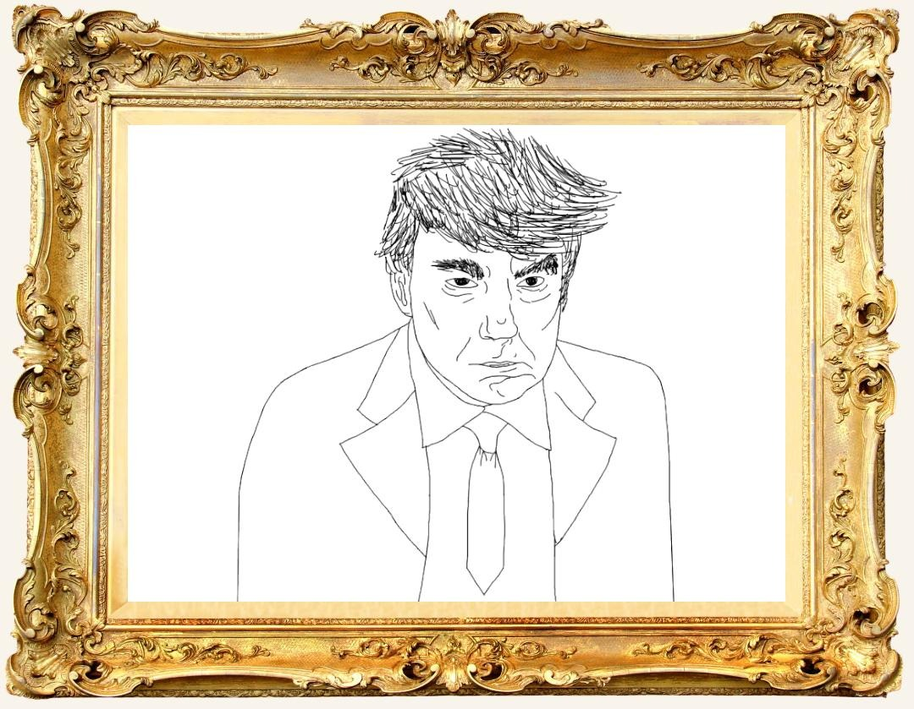

$Farts
A Retrospective
May 2026 — Ongoing
Scroll to enter
Curator's Note
This exhibition traces the cultural arc of $Farts — from its irreverent origins as a meme coin to its improbable emergence as a digital art phenomenon. Each exhibit presents a facet of the project, inviting the viewer to reconsider the boundaries between comedy and culture, between the dismissed and the divine. The works herein ask not whether $Farts has value, but whether value was ever the point.

Fig. 1 — The clown
I.
The Clown
Surrounded by wealth, influence, and endless attention, the figure still reached for something greater — power elevated into spectacle. Every gesture became performance, every conflict transformed into theater for an audience addicted to outrage. Behind the image stood a man obsessed with control, building loyalty through fear, intimidation, and division while presenting chaos as strength. Yet the harder he attempted to dominate the stage, the more the performance began to unravel beneath him.
The painting captures the precise moment ego overtakes reason — when ambition becomes self-destruction disguised as leadership. Perhaps if he had waited patiently and invested in $Farts, he may have become a far more cultured — and significantly wealthier — man.

Fig. 2 — The Manipulator
II.
The Manipulator
Private islands, billionaire friends, secret meetings, endless money — the figure lived like he had permanently unlocked the elite membership pass to humanity. Every handshake was another deal, every connection another layer of protection around the empire he carefully built in the shadows. But eventually the scandal exploded, the invitations stopped arriving, and the same people who once smiled beside him suddenly developed memory loss. Turns out even infinite networking cannot patch a catastrophic PR rug pull.
The painting captures the exact moment luxury transforms into liability — when a man realizes his private island may have generated slightly too much public attention. If he had simply ignored all of that and bought $Farts instead, he could have retired peacefully as a wealthy connoisseur of fine digital culture.

Fig. 3 — The Pervert
III.
The Pervert
Hidden behind luxury, fame, and carefully staged parties, the figure turned excess into influence and influence into control. The rooms were filled with celebrities, secrets, expensive bottles, and enough oil to make every guest deeply uncomfortable in hindsight. Rumors, blackmail, industry manipulation, endless feuds, disappearing loyalty — the empire thrived on intimidation disguised as entertainment. Every party created another layer of leverage, every connection another thread in a network built on fear, corruption, and silence.
The painting captures the exact moment glamour stops looking glamorous — when the lights stay on too long, the music fades, and the oil suddenly becomes historical evidence. Had he invested less energy into lubricating his empire and more into accumulating $Farts, he may have secured a far wealthier — and significantly less federal — legacy.

Fig. 4 — The Insecure Male
IV. The Insecure
The figure built an empire selling certainty to lost young men — fast cars, loud speeches, endless confidence, and the promise that empathy was weakness. In his world, a normal life became failure, and every teenager with a phone was told that a 9–5 job was spiritual defeat. But behind the performance stood constant contradiction: legal scandals, accusations of exploitation, and an obsession with appearing “alpha” at all costs. Even the illusion of invincibility began cracking the moment exhaustion replaced arrogance and the character could no longer perform dominance on command.
The painting captures a man trapped inside his own persona — desperately selling strength while quietly terrified of appearing ordinary. Had he spent less time explaining masculinity to strangers online and more time accumulating $Farts, he might have evolved into a significantly wealthier — and unexpectedly refined — gentleman of culture.

Fig. 5 — The Narcissist
V.
The Narcissist
Consumed by mirrors, filters, and endless self-analysis, the figure transformed his own appearance into a full-time religion. Every angle, haircut, procedure, and enhancement became another attempt to reach an impossible standard that moved further away each time he approached it. Beneath the obsession lived exhaustion — self-modification pushed so far that identity itself began dissolving into aesthetics. Discipline turned into mutilation, self-improvement into dependency, and even chemicals became tools in the pursuit of artificial perfection.
The painting captures a generation taught to value surface above substance, where beauty becomes currency and the human body is treated like a project under constant reconstruction. Had he redirected even a fraction of that obsessive energy toward accumulating $Farts, he might have discovered that generational wealth is significantly easier to maintain than generational cheekbone structure.of the crowd to exist at all.

Fig. 6 — The Machine Behind the Curtain
V.
The Machine Behind
The Curtain
We barely use AI in our work. Most of the art, concepts, characters, and animations are made manually because we want the project to keep its own personality instead of looking like generic generated content. The only things we really use AI for are voice acting and helping us write or organize descriptions faster, mainly so we can push out more animations and content across our socials without slowing production down.
At the end of the day, the goal is simple: make entertaining art, stay creative, and keep building the world of $Farts as much as possible.
Continue the Exhibition
Begin Your Collection
The exhibition extends beyond these walls. Join the congregation, acquire the token, and become part of the permanent collection.